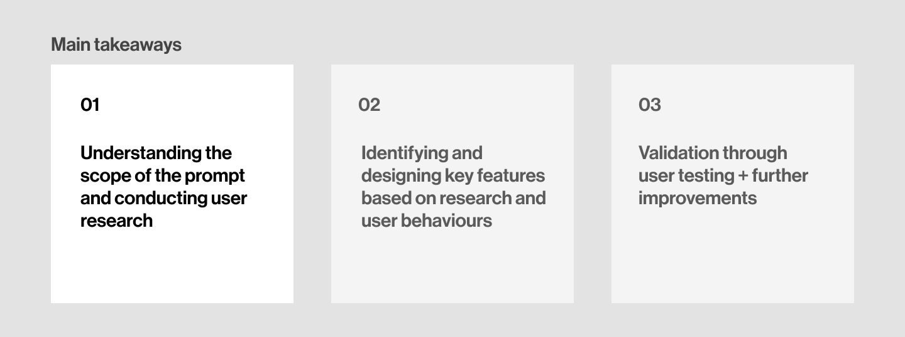
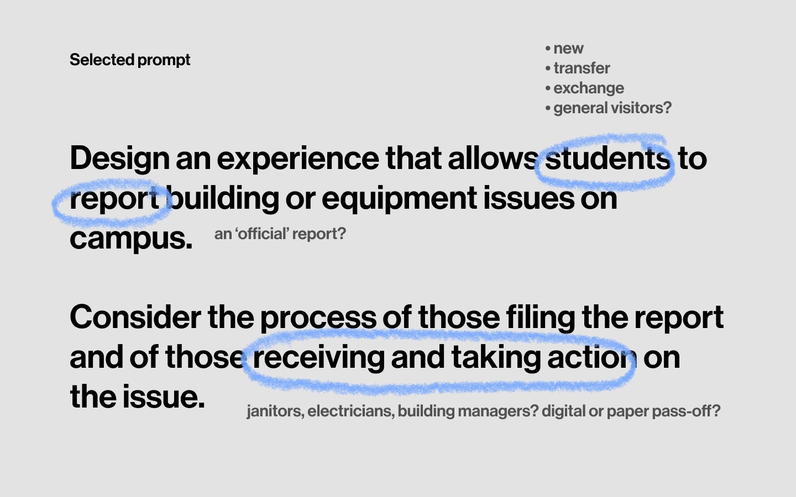

Managing Building Operations
Project Timeline
January 2020 (1 week)
Project Type
Design Challenge
Role
Sole Designer; Research, UX/UI Design, Visual Design
A solution for building operations and school campuses.
Managing building operations is an exploratory solution to the Google 2020 UX Design challenge this year. The proposed solution passed the challenge and made it to the project matching stage.
There's a lack of social accountability for shared spaces. Not yours? Not your problem 👀
Based on my school, UBC online services is a progressive web app that allows campus-goers and building maintenance to communicate and resolve campus issues.
Process ↯
Why is that? What's the current interaction like between students and building management? If there was better communication and faciliation between the 2 parties, what are the consequences? First, it was important to understand exactly what problem I was solving for, why it's important and its project scope.
A quick brainstorm of the prompt allowed me to understand that I was designing for both the individuals reporting the issues, as well as the management resolving the issues. This led me to conduct interviews and surveys with both sides - campus-goers, and school operations/management.
How are students, faculty and campus visitors currently dealing with reporting campus issues?
01 - Students don't report campus facilities issues.
Current methods of reporting facilities for maintenance or repair is trhough tweeting, emailing or calling. The alternative is to submit a form online.
Most students report that it's too much work, inconvenient and assume that someone else will report the issue. Plus, "I don't want people to see that I'm tweeting about a bathroom issue" 🙈
How can we make it easier for students to report these problems, and help encourage social responsibility?
02 - Students are on the go, and don't have time to fill out a form or email.
Students never stay in the same building/facilities for too long and don’t actively seek out reporting facilities issues unless the issue personally impacts them.
Following this user behaviour, we should create an experience on a platform that encourages faster reporting.
How can we ensure that this product allows users to report their issue efficiently and quickly?
How are building operations and maintenance working with this situation from their end?
03 - When students do report issues, the info is triaged and manually assigned to the appropriate crew.
Crew members also make reports in their daily line of work, and these are reported internally.
In addition, tasks and requests are re-assigned to appropriate crew members to their respective buildings within a zoning system. However, most of these processes are manual and inefficient.
How can we improve the workflow and task distribution for Operations crew members?
04 - If a request service is submitted online, then the requestor can receive a completion status. All other requests are unable to recieve an update status.
Incoming requests eg. tweets, emails are converted to a service request, which is then assigned.
However, the current system does not allow students or visitors to make service requests, only faculty members and school employees. Requests made are addressed according to their priority but the status of the request is often not updated.
How can we increase communications between requesters and crew members under the goal of resolving requests?